Cindy Feng's Assignment 2
This assignment was completed in the MILL on 04/22/2019.
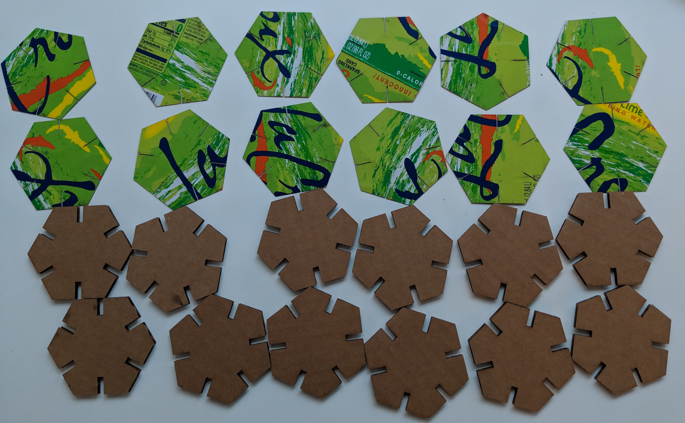
Files used:
Learning Grasshopper
With no prior experience with Grasshopper and some experience with Rhino, I took to my laptop to just familiarize myself with Grasshopper. Some progress shots and lessons learned:
Familiarizing myself with the interface. I spent a while with Kim Dziubinski in the MILL trying to figure out how to remove branches. Overall I picked up Grasshopper pretty quickly and created a network of inputs and outputs. The user interface definitely needs some work, but I know that 3D CAD software does not undergo much usability testing.
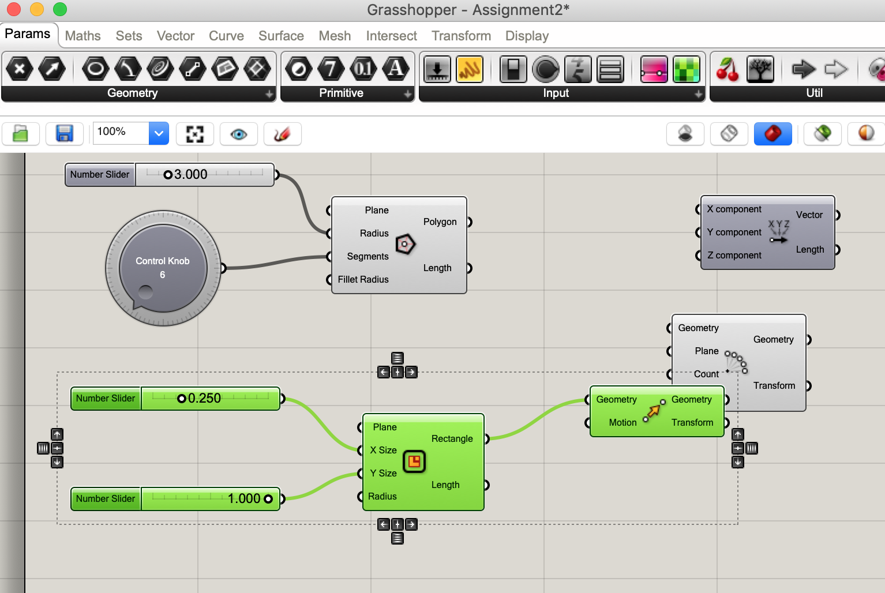
In order to assign a I got very confused by the number icon, which read a number "7", so I found out I had to go into the display settings to uncheck "Draw Icons" in order to change the text on the integer parameter to "2".
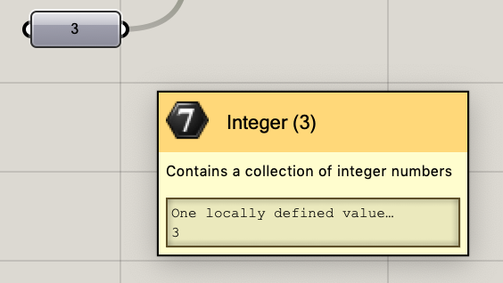
I created number sliders for the thickness of the cardboard, and the length of the recangular slots in a polar array in a polygon. I soon decided I wanted to control the number of sides of a polygon with a control knob. Here is what I started with, a hexagon. The branches started to get complicated.
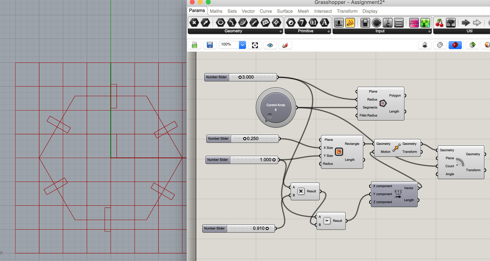
I then wanted the number of slots to also be controlled by the knob, and here is where I did some math to find out by what angle the original rectangle would have to rotate about the origin to stay centered on a flat side of the polygon. I noticed that the polygon held the 90 degree point whenever I changed the number of sides. The last step was figuring out that the rotation function in Grasshopper rotates in a counterclockwise direction by default, so I had to negate the radian values. The equation was -pi/4 + -2*pi/(# of polygon sides).
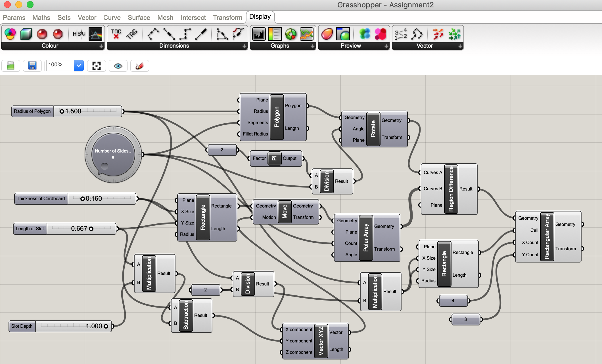
I was super close! Just some minor debugging and then I added a rectangular array to print 3 rows of 4 shapes.
Grasshopper and Rhino Output
The final Grasshopper layout is below. I tried cleaning up the branches a bit, but this was the best I could do.
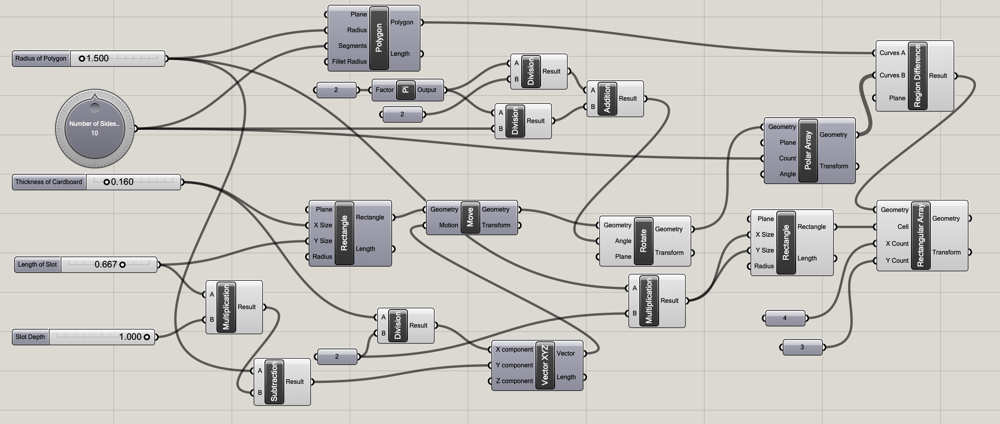
And here is the resulting Rhino output for 6 sides:
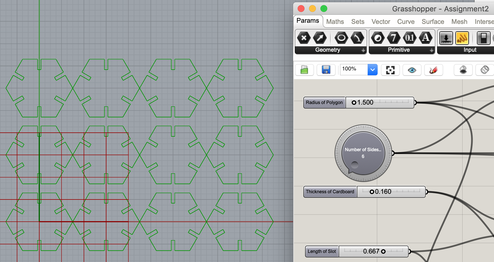
Rhino output for 10 sides:
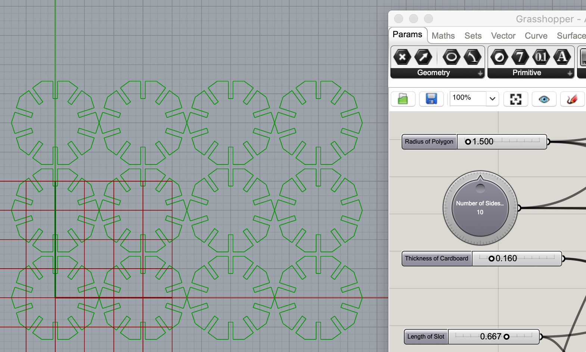
Lasercut Output
Because I only had the CAD model for the hexagon shape while at the MILL, I only lasercut hexagons. I used three thicknesses of cardboard total for this assignment. The first was 0.16" corrugated cardboard.
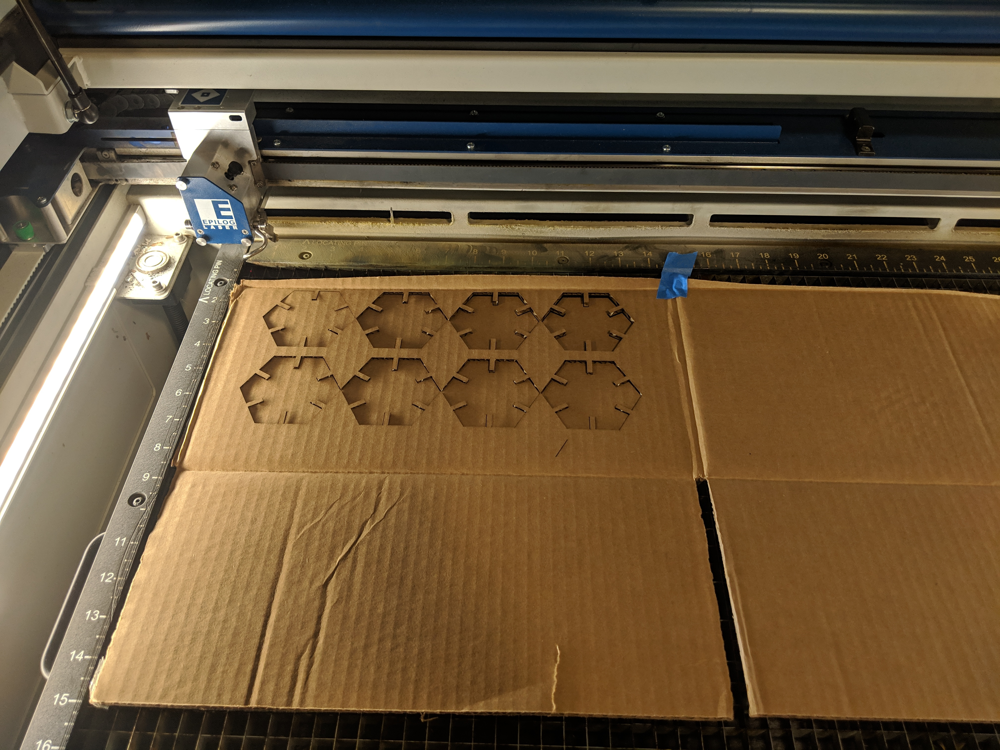
The second was 0.02" thick cardboard (La Croix canned soda container).

Since I was worried this would be too flimsy, I printed on a 3rd material using Kim's white cardboard.
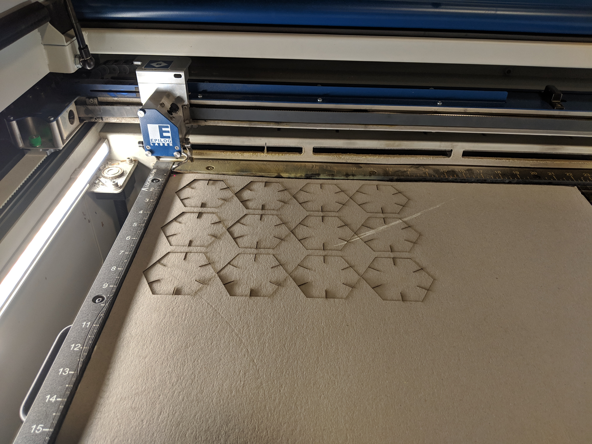
Assemblies That Do Not Come Apart with a Light Shaking!
Machine Settings:
- Power: 100%
- Speed: 25%
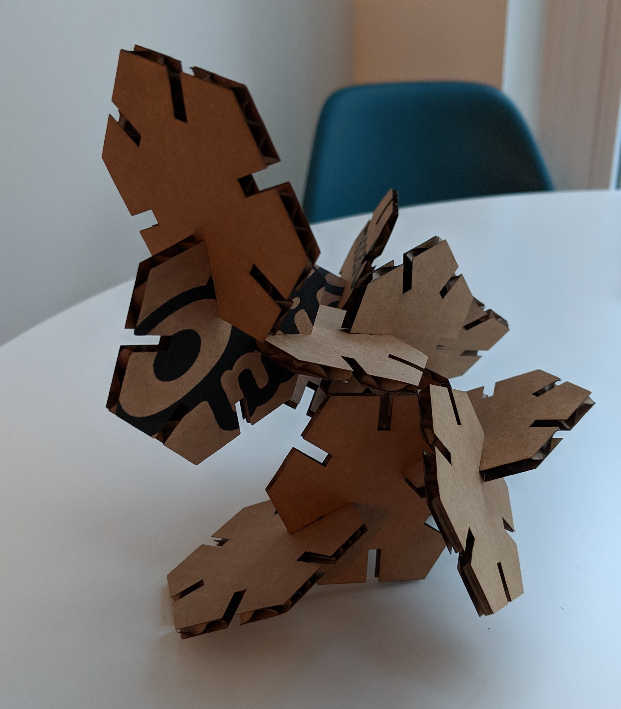
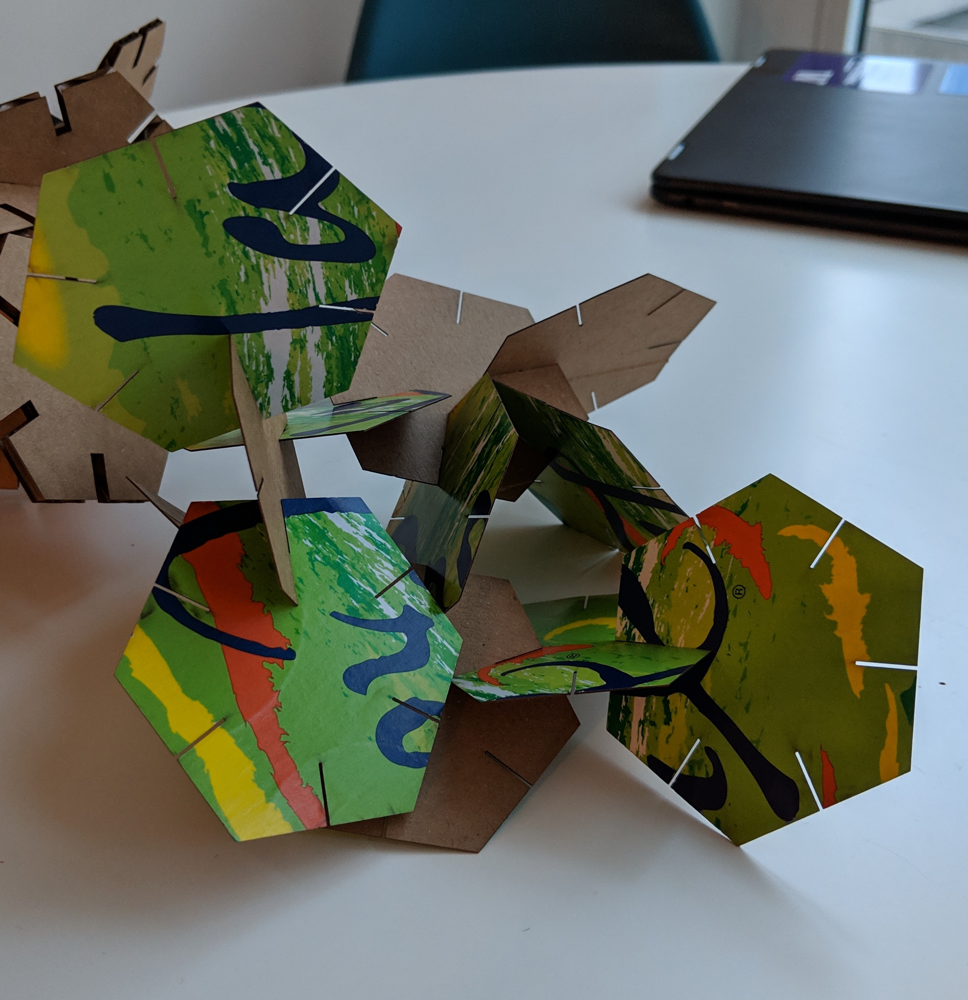
I found that the LaCroix cardboard was too flimsy and would flop around when I shook it, so it was a good thing I had Kim's cardboard as a backup.
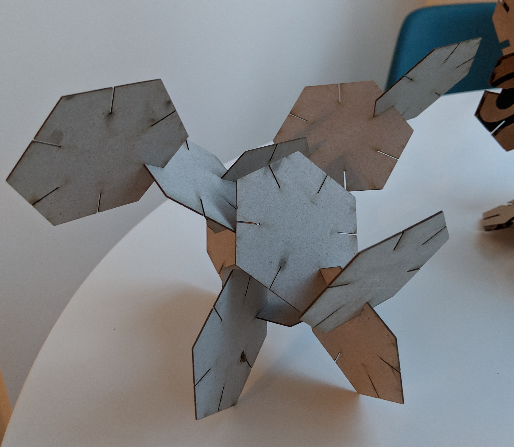
All the assemblies!
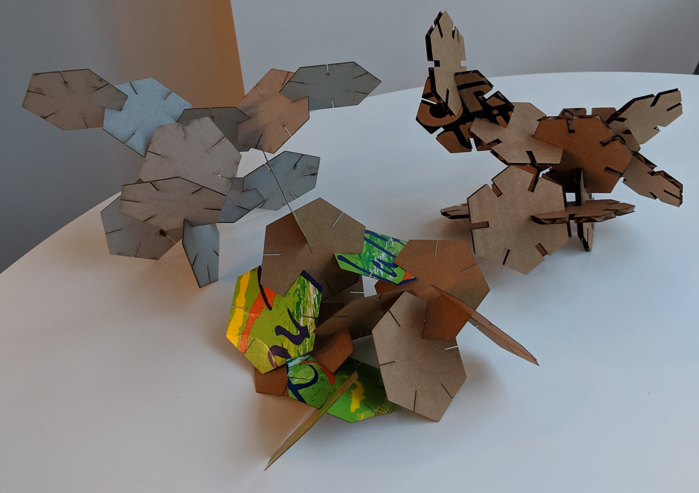
Peer teacher: Kim Dziubinski